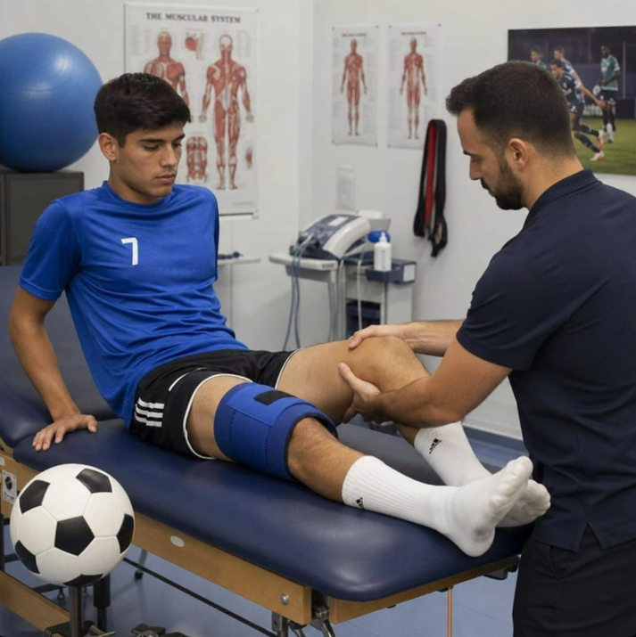

★★★★★
"The physiotherapy sessions helped me improve my mobility and gradually return to my normal activities. The treatment was professional and well organized."
PHYSIOCARE CLINIC — BEIRUT, LEBANON
Every athlete deserves to move with confidence. At PhysioCare Clinic, we focus on sports physiotherapy, football injury rehabilitation, and personalized recovery programs designed to restore movement, rebuild strength, and help you return to the sport you love.

YEARS OF EXPERIENCE
TREATMENT PROGRAMS
PATIENTS TREATED
DEDICATION TO YOUR RECOVERY
At PhysioCare Clinic, recovery goes beyond treating an injury. We focus on helping every patient regain movement, rebuild strength, and return to the activities they love. From football injuries to everyday physical discomfort, our approach is centered around your individual needs and recovery goals.
Every injury is different. Our rehabilitation approach is tailored to your condition, physical needs, and personal recovery goals.
With a particular focus on football and sports injuries, our rehabilitation programs help athletes work toward returning to their sport safely and confidently.
From restoring mobility to rebuilding strength, every stage of rehabilitation is designed to support meaningful progress toward your goals.
We emphasize controlled movement, progressive exercises, and appropriate guidance to support recovery and help reduce the risk of future injuries.
We aim to create a welcoming environment where every patient feels heard, understood, and supported throughout their recovery journey.
"The physiotherapy sessions helped me improve my mobility and gradually return to my normal activities. The treatment was professional and well organized."
"A very supportive rehabilitation experience. Every exercise was explained clearly, and the treatment plan was adapted to my recovery."
"The rehabilitation program was structured and easy to follow. I appreciated the attention given to my progress throughout the sessions."
"A comfortable and welcoming environment. The physiotherapy sessions focused on improving my movement and confidence."
"I appreciated the personalized approach and the clear guidance throughout my rehabilitation. A positive experience overall."
"The sessions were organized, and the exercises were adapted to my needs. The team made the rehabilitation process easier to understand."